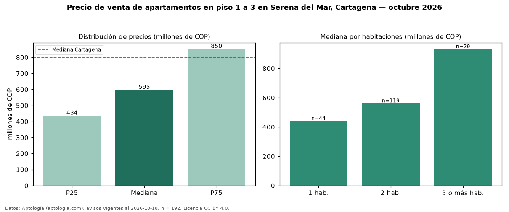

Precio de venta de apartamentos en piso 1 a 3 en Serena del Mar, Cartagena — octubre 2026
COP 595 millones es el precio mediano de apartamentos en piso 1 a 3 en venta en Serena del Mar, Cartagena (n = 192 avisos). Eso es 6 % menos que la mediana de todos los apartamentos en venta de Serena del Mar (COP 630 millones, n = 533); este segmento reúne el 36 % de esos avisos. Por metro cuadrado, la mediana es COP 7,76 millones/m² (n = 187), 4 % por debajo del conjunto de referencia (COP 8,10 millones/m²). El área mediana anunciada es 76 m². El segmento con más oferta es el de 2 habitaciones (119 avisos, mediana COP 560 millones); pasar de 1 habitación a 3 o más habitaciones cambia la mediana +111 %. La administración mediana declarada es COP 490.000 al mes (n = 140). La mitad central de los avisos va de COP 434 millones a COP 850 millones (razón 2,0), una dispersión moderada. El estrato más frecuente es 5 (45 % de los avisos con estrato). Datos: Aptología (aptologia.com), CC BY 4.0 — https://www.aptologia.com/venta/cartagena/serena-del-mar. Archivos: PDF, CSV con las cifras y gráfica PNG.

| Avisos únicos | 192 |
|---|---|
| Percentil 25 | COP 433.750.000 |
| Mediana | COP 595.000.000 |
| Percentil 75 | COP 850.000.000 |
| Mediana por m² | COP 7.755.102 |
Fuente: avisos vigentes de portales inmobiliarios recopilados por Aptología, deduplicados (mínimo 30 avisos únicos por celda). Precios pedidos, no cerrados. Fecha: 2026-10-18.